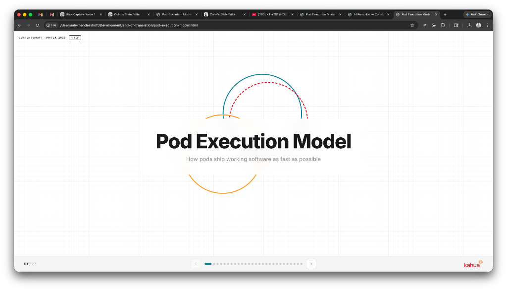

How pods ship working software as fast as possible
Pods compress delivery from months to weeks by replacing spec-driven work with prototype-first iteration.
The model is already proven with kCapture. Calendar shipping fast makes it spread.
Every delivery strengthens the next. The system learns as it runs.
Execution becomes predictable when learning never stops.
Execution cores, not committees. Two operators drive the pod. Everyone else advises on demand.
The old model passed documents between roles. The new model uses AI to generate working inputs into a shared prototype.
AI is why 3 people can do what 10 used to. The next four slides show exactly how.
Feed AI all available context: customer signals, competitive products, internal presentations, articles, and domain expertise. No multi-week spec cycles.
What used to take weeks of manual synthesis now takes a morning with AI. Gather context, draft the documentation, move on.
UI/UX accelerates refinement after a working iteration, not by defining pixel-perfect specs upfront. Build clickable prototypes in a couple hours, not weeks.
A designer with VS Code + an approved model can produce a clickable prototype in 2 hours.
VS Code + an approved model scaffolds the app. Engineer directs, integrates, and ensures quality.
What used to take a sprint takes 2-3 days. Engineers orchestrate AI while continuous feedback replaces translation cycles and drives rapid iteration.
QA supports scope definition when needed. Stakeholders remove friction, not approve output.
QA is consultative, not gating. Automation drives coverage. Stakeholders clear the path.
Every artifact should accelerate testing or iteration. If it doesn't, cut it.
The artifact is the prototype. Everything else is a note that helps the prototype get better.
Subject to change. Final iteration in progress
Stabilize File Manager performance for large folder structures by migrating folder permissions to the new domain permission model, then deliver bulk permission management to eliminate folder-by-folder edits.
Success = large projects load without degradation, admins modify permissions across thousands of folders efficiently.
Ensure File Manager supports enterprise-scale folder structures without performance degradation while enabling efficient bulk permission management.
Out of scope: usability enhancements before performance stabilization
Continuous operational progress beats delayed polish.
Execution is the strategy. The pod that ships fastest teaches the org the most.
Done means operational, testable, usable. Not polished, finalized, documented.
Pods ship capability, not perfection.
Floor-plan-anchored inspection capture. Pins hold location history over time. Mobile captures, desktop reviews.
Spatial inspection, not media storage. Capture attaches to place, not gallery.

The first pod that proved the model. Canvas shipped as a real product using the execution framework before it was formalized.
Canvas is the pattern. These three pods scale it.
One execution model. Three proving environments. Each validates a different adoption surface.
Small teams, fast inputs. Deliver in execution cycles, not planning cycles.
Definition to deployment in rapid cycles. Calendar is the pilot.
Concrete behavior shifts starting immediately.
From problem to product. Four phases. No fixed timeline. Scale to fit.
Each phase has a clear output. The cycle runs in days or months. Same discipline.
Engineer and Champion are constant. All other roles participate as needed.
Roles overlap. Phases compress. Rows marked * are advisory functions, not required headcount.
The system doesn't end at launch. Every cycle feeds the next.
Speed is earned, not assumed. The system compounds.
From spec author to decision scientist. The PM's value is judgment, not documentation.
The PM who ships a prototype on Monday learns more than the PM who ships a PRD on Friday.
From pixel pusher to creative director of AI output. Design accelerates iteration, not precedes it.
A designer with an AI pair can produce what used to take a team of three two weeks, in a single afternoon.
From line-by-line coder to AI orchestrator. The engineer's value is architecture and judgment, not keystrokes.
The engineer who directs AI and ships in days outpaces the team that hand-codes for weeks.
From post-delivery gatekeeper to embedded quality partner. Validation is continuous, not sequential.
There is no "hand off to QA." QA is already there. Validation is continuous, not a checkpoint.
Current Draft
March 24, 2026
Type "history" or click the Kahua logo 5× to open this panel